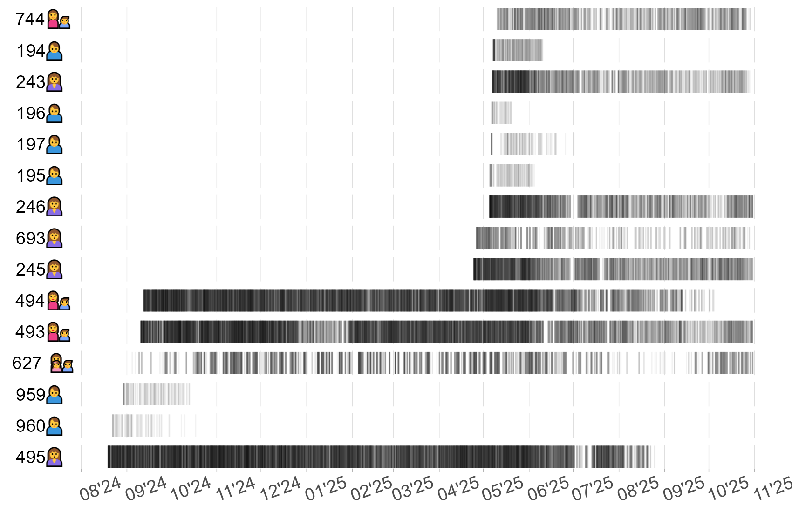
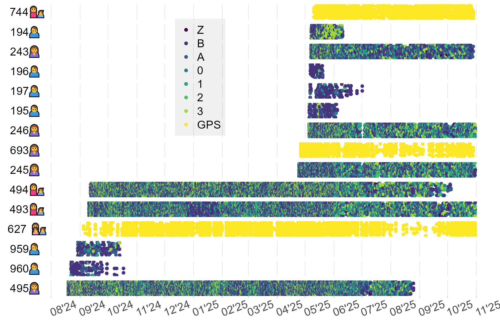
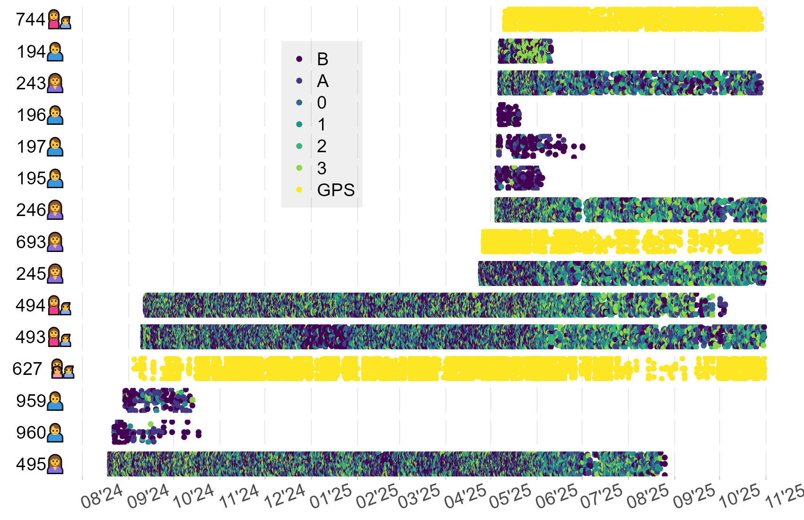
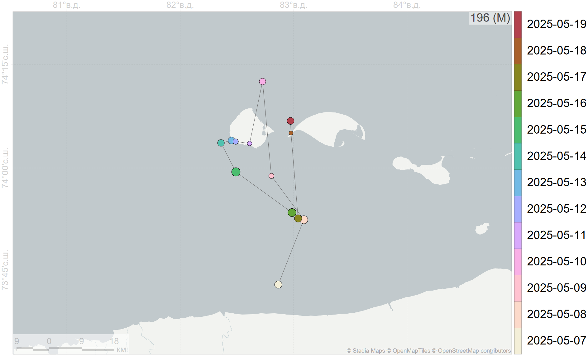
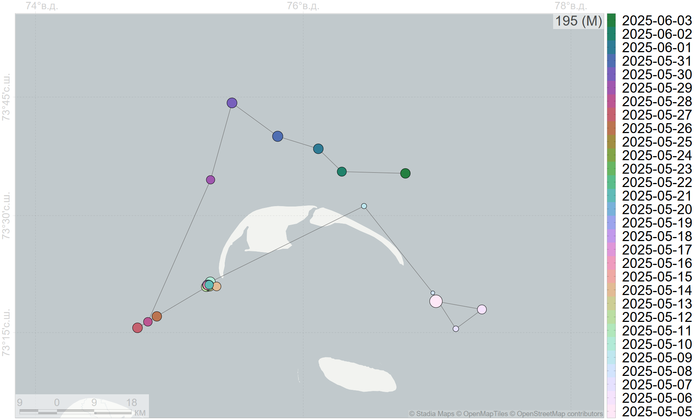
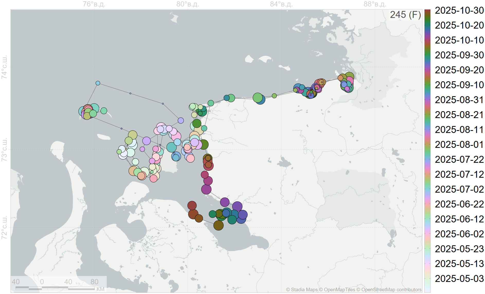
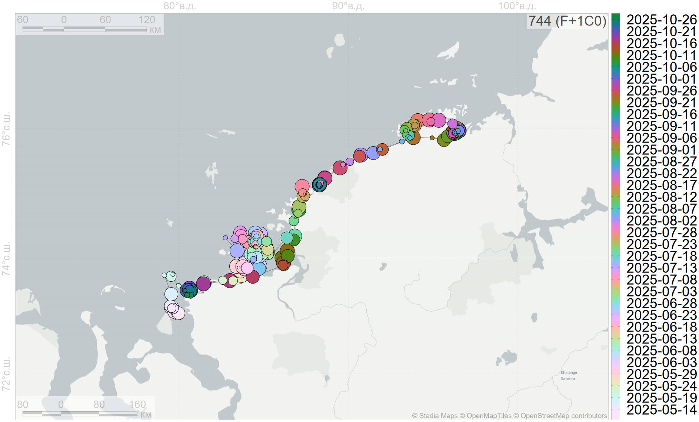
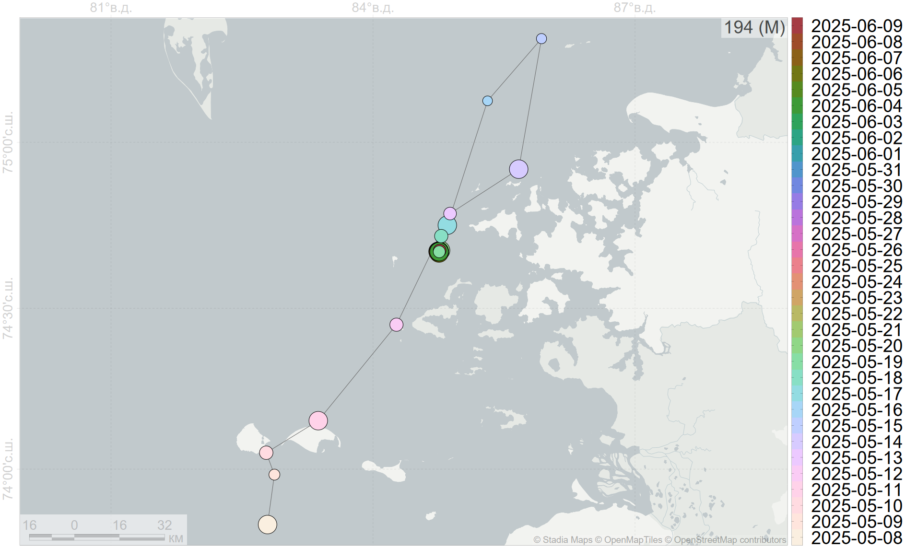

layout: true .toc.banner[ .rosneft[ ] .tamura[ ] .shorttitle[ ] ] --- name: home class: metadata customtitle middle left giphy .toc.sidebar.left-column[ .outline[ # [О программе ](#H88047) # [Данные ](#Hb52bc) # [Методы ](#H0c413) # [Результаты ](#Ha7d7e) # [Обсуждение ](#H3a6bc) # [Выводы ](#H4e85f) ] ] .toc.mainbar.right-column.scrollable[ .authors[ .author[.speaker[Платонов Н. Г.], Иванов Е. А., Мордвинцев И. Н., Артемьева С. М., Найденко С. В.] .institute[Институт проблем экологии и эволюции им. А. Н. Северцова Российской академии наук, г. Москва] .author[Исаченко А. И., Лазарева Р. Е.] .institute[ООО «Арктический Научный Центр», г. Москва] ] .title[ Программа сохранения биоразнообразия "ТАМУРА" компании "Роснефть":<br>Спутниковая биотелеметрия белых медведей Карского моря ] .subtitle[ ] .what[ ] .where[ ] .when[ .updated[Обновлено: 2025-10-03 18:48] ] ] --- name: H88047 .toc.sidebar.left-column[ .outline[ # [О программе ](#H88047).fg[].bg[] # [Данные ](#Hb52bc) # [Методы ](#H0c413) # [Результаты ](#Ha7d7e) # [Обсуждение ](#H3a6bc) # [Выводы ](#H4e85f) ] ] .toc.mainbar.right-column.scrollable[ .header.h1.broad[ <span class="me">О программе</span> ] .fixprecode[ Оценка численности и современного состояния белого медведя Карского моря: + авиаучет животных по всей акватории Карского моря путем инструментальных и аэровизуальных наблюдений; + оценка встречаемости, распределения и половозрастного состава особей путем маршрутных вертолетных наблюдений в северо-западной части п-ова Таймыр в безледовый и ледовый периоды; + временное обездвиживание обнаруженных белых медведей и мечение спутниковыми передатчиками; + проведение морфометрических обмеров и отбор комплекса биологических проб для последующего анализа; + выявление закономерностей распределения и поведения белых медведей в безледовый и ледовый периоды, оценка физического состояния особей и их пищевых предпочтений; + токсикологические, серологические, биохимические и молекулярно-генетические исследования. ] ] --- name: Hb52bc .toc.sidebar.left-column[ .outline[ # [О программе ](#H88047) # [Данные ](#Hb52bc).fg[].bg[] ## [Передатчики ](#H41cf8) ## [Отловы ](#Hfe876) # [Методы ](#H0c413) # [Результаты ](#Ha7d7e) # [Обсуждение ](#H3a6bc) # [Выводы ](#H4e85f) ] ] .toc.mainbar.right-column.scrollable[ .header.h1.broad[ <span class="me">Данные</span> ] .fixprecode[ Экспедиционные работы, обездвиживание с вертолёта: + 2024 г., безлёдный период, август-сентябрь. + 2025 г., ледовый период, апрель-май. ] ] --- name: H41cf8 .toc.sidebar.left-column[ .outline[ # [О программе ](#H88047) # [Данные ](#Hb52bc).fg[] ## [Передатчики ](#H41cf8).fg[] ### [Ошейники ](#H41cf8).fg[].bg[] ### [Ушные метки ](#H088f2) ## [Отловы ](#Hfe876) # [Методы ](#H0c413) # [Результаты ](#Ha7d7e) # [Обсуждение ](#H3a6bc) # [Выводы ](#H4e85f) ] ] .toc.mainbar.right-column.scrollable[ .header.h3.broad[ <span class="me">Ошейники</span> .parent[.grand[Передатчики .grand[Данные]]] ] .fixprecode[ <img src="assets/Polar Bear Collar.jpg" width="1330" height="700" style="display: block; margin: auto auto auto 0;" /> ] ] --- name: H088f2 .toc.sidebar.left-column[ .outline[ # [О программе ](#H88047) # [Данные ](#Hb52bc).fg[] ## [Передатчики ](#H41cf8).fg[] ### [Ошейники ](#H41cf8) ### [Ушные метки ](#H088f2).fg[].bg[] ## [Отловы ](#Hfe876) # [Методы ](#H0c413) # [Результаты ](#Ha7d7e) # [Обсуждение ](#H3a6bc) # [Выводы ](#H4e85f) ] ] .toc.mainbar.right-column.scrollable[ .header.h3.broad[ <span class="me">Ушные метки</span> .parent[.grand[Передатчики .grand[Данные]]] ] .fixprecode[ .pulling[ .pull-left[ <img src="assets/Ушная метка №1.jpeg" width="1330" height="700" style="display: block; margin: auto auto auto 0;" /> ] .pull-right[ <img src="assets/Ушная метка №2.jpg" width="1330" height="700" style="display: block; margin: auto auto auto 0;" /> ] ] ] ] --- name: Hfe876 .toc.sidebar.left-column[ .outline[ # [О программе ](#H88047) # [Данные ](#Hb52bc).fg[] ## [Передатчики ](#H41cf8) ## [Отловы ](#Hfe876).fg[] ### [2024 г. ](#Hfe876).fg[].bg[] ### [2025 г. ](#H3b8e7) # [Методы ](#H0c413) # [Результаты ](#Ha7d7e) # [Обсуждение ](#H3a6bc) # [Выводы ](#H4e85f) ] ] .toc.mainbar.right-column.scrollable[ .header.h3.broad[ <span class="me">2024 г.</span> .parent[.grand[Отловы .grand[Данные]]] ] .fixprecode[ <img src="assets/collar-2024.png" width="1330" height="700" style="display: block; margin: auto auto auto 0;" /> ] ] --- name: H3b8e7 .toc.sidebar.left-column[ .outline[ # [О программе ](#H88047) # [Данные ](#Hb52bc).fg[] ## [Передатчики ](#H41cf8) ## [Отловы ](#Hfe876).fg[] ### [2024 г. ](#Hfe876) ### [2025 г. ](#H3b8e7) <span class="bullet bullet-active">[•](#H3b8e7)</span><span class="bullet mslide12m">[•](#H278d1)</span><span class="bullet mslide13m">[•](#H508a2)</span>.fg[].bg[] # [Методы ](#H0c413) # [Результаты ](#Ha7d7e) # [Обсуждение ](#H3a6bc) # [Выводы ](#H4e85f) ] ] .toc.mainbar.right-column.scrollable[ .header.h3.broad[ <span class="me">2025 г.</span> .parent[.grand[Отловы .grand[Данные]]] ] .fixprecode[ <img src="assets/collar-2025.png" width="1330" height="700" style="display: block; margin: auto auto auto 0;" /> ] ] --- name: H278d1 .toc.sidebar.left-column[ .outline[ # [О программе ](#H88047) # [Данные ](#Hb52bc).fg[] ## [Передатчики ](#H41cf8) ## [Отловы ](#Hfe876).fg[] ### [2024 г. ](#Hfe876) ### [2025 г. ](#H3b8e7) <span class="bullet bullet">[•](#H3b8e7)</span><span class="bullet bullet-active">[•](#H278d1)</span><span class="bullet mslide13m">[•](#H508a2)</span>.fg[].bg[] # [Методы ](#H0c413) # [Результаты ](#Ha7d7e) # [Обсуждение ](#H3a6bc) # [Выводы ](#H4e85f) ] ] .toc.mainbar.right-column.scrollable[ .header.h3.broad[ <span class="me">2025 г.</span> .parent[.grand[Отловы .grand[Данные]]] ] .fixprecode[ ] ] --- name: H508a2 .toc.sidebar.left-column[ .outline[ # [О программе ](#H88047) # [Данные ](#Hb52bc).fg[] ## [Передатчики ](#H41cf8) ## [Отловы ](#Hfe876).fg[] ### [2024 г. ](#Hfe876) ### [2025 г. ](#H3b8e7) <span class="bullet bullet">[•](#H3b8e7)</span><span class="bullet bullet">[•](#H278d1)</span><span class="bullet bullet-active">[•](#H508a2)</span>.fg[].bg[] # [Методы ](#H0c413) # [Результаты ](#Ha7d7e) # [Обсуждение ](#H3a6bc) # [Выводы ](#H4e85f) ] ] .toc.mainbar.right-column.scrollable[ .header.h3.broad[ <span class="me">2025 г.</span> .parent[.grand[Отловы .grand[Данные]]] ] .fixprecode[ <img src="assets/collar-2025-m.png" width="1330" height="700" style="display: block; margin: auto auto auto 0;" /> ] ] --- name: H0c413 .toc.sidebar.left-column[ .outline[ # [О программе ](#H88047) # [Данные ](#Hb52bc) # [Методы ](#H0c413).fg[] ## [Локации ](#H0c413).fg[] ### [Обработка ](#H0c413).fg[].bg[] ### [Частота ](#H3abd8) ### [Точность ](#Ha64ec) # [Результаты ](#Ha7d7e) # [Обсуждение ](#H3a6bc) # [Выводы ](#H4e85f) ] ] .toc.mainbar.right-column.scrollable[ .header.h3.broad[ <span class="me">Обработка</span> .parent[.grand[Локации .grand[Методы]]] ] .fixprecode[ + Фильтрация локаций по порогу скорости смещения <span class="cite hovertext" data-hover="A simple new algorithm to filter marine mammal Argos locations"><a name=cite-Argos-filter></a>([Freitas et al., 2008](#bib))</span>. + Исключение локаций вручную и повторение фильтрации + На 03 октября 2025 г. для одной особи одна локация в море Лаптевых + Модель простого случайного блуждания <span class="cite hovertext" data-hover="Movement responses to environment: fast inference of variation among southern elephant seals with a mixed effects model"><a name=cite-Jonsen2019></a>([Jonsen et al., 2019](#bib))</span>, <span class="cite hovertext" data-hover="A continuous-time state-space model for rapid quality-control of Argos locations from animal-borne tags"><a name=cite-Jonsen2020></a>([Jonsen et al., 2020](#bib))</span> для построения ежесуточных локаций на 12:00 <abbr title="единое скоординированное время, единое время">UTC</abbr> ] ] --- name: H3abd8 .toc.sidebar.left-column[ .outline[ # [О программе ](#H88047) # [Данные ](#Hb52bc) # [Методы ](#H0c413).fg[] ## [Локации ](#H0c413).fg[] ### [Обработка ](#H0c413) ### [Частота ](#H3abd8) <span class="bullet bullet-active">[•](#H3abd8)</span><span class="bullet mslide18m">[•](#Hc758f)</span><span class="bullet mslide19m">[•](#Hb05fc)</span>.fg[].bg[] ### [Точность ](#Ha64ec) # [Результаты ](#Ha7d7e) # [Обсуждение ](#H3a6bc) # [Выводы ](#H4e85f) ] ] .toc.mainbar.right-column.scrollable[ .header.h3.broad[ <span class="me">Частота</span> .parent[.grand[Локации .grand[Методы]]] ] .fixprecode[ <div class="figure" style="text-align: left">  <p class="caption">Частота исходных локаций</p> </div> ] ] --- name: Hc758f .toc.sidebar.left-column[ .outline[ # [О программе ](#H88047) # [Данные ](#Hb52bc) # [Методы ](#H0c413).fg[] ## [Локации ](#H0c413).fg[] ### [Обработка ](#H0c413) ### [Частота ](#H3abd8) <span class="bullet bullet">[•](#H3abd8)</span><span class="bullet bullet-active">[•](#Hc758f)</span><span class="bullet mslide19m">[•](#Hb05fc)</span>.fg[].bg[] ### [Точность ](#Ha64ec) # [Результаты ](#Ha7d7e) # [Обсуждение ](#H3a6bc) # [Выводы ](#H4e85f) ] ] .toc.mainbar.right-column.scrollable[ .header.h3.broad[ <span class="me">Частота</span> .parent[.grand[Локации .grand[Методы]]] ] .fixprecode[ <div class="figure" style="text-align: left"> <img src="assets/locfrequency-sda.png" alt="Частота локаций после фильтрации" width="1330" height="700" /> <p class="caption">Частота локаций после фильтрации</p> </div> ] ] --- name: Hb05fc .toc.sidebar.left-column[ .outline[ # [О программе ](#H88047) # [Данные ](#Hb52bc) # [Методы ](#H0c413).fg[] ## [Локации ](#H0c413).fg[] ### [Обработка ](#H0c413) ### [Частота ](#H3abd8) <span class="bullet bullet">[•](#H3abd8)</span><span class="bullet bullet">[•](#Hc758f)</span><span class="bullet bullet-active">[•](#Hb05fc)</span>.fg[].bg[] ### [Точность ](#Ha64ec) # [Результаты ](#Ha7d7e) # [Обсуждение ](#H3a6bc) # [Выводы ](#H4e85f) ] ] .toc.mainbar.right-column.scrollable[ .header.h3.broad[ <span class="me">Частота</span> .parent[.grand[Локации .grand[Методы]]] ] .fixprecode[ <div class="figure" style="text-align: left"> <img src="assets/locfrequency-hr.png" alt="Обратная ошибка точности ежесуточных локаций" width="1330" height="700" /> <p class="caption">Обратная ошибка точности ежесуточных локаций</p> </div> ] ] --- name: Ha64ec .toc.sidebar.left-column[ .outline[ # [О программе ](#H88047) # [Данные ](#Hb52bc) # [Методы ](#H0c413).fg[] ## [Локации ](#H0c413).fg[] ### [Обработка ](#H0c413) ### [Частота ](#H3abd8) ### [Точность ](#Ha64ec) <span class="bullet bullet-active">[•](#Ha64ec)</span><span class="bullet mslide21m">[•](#H95a91)</span>.fg[].bg[] # [Результаты ](#Ha7d7e) # [Обсуждение ](#H3a6bc) # [Выводы ](#H4e85f) ] ] .toc.mainbar.right-column.scrollable[ .header.h3.broad[ <span class="me">Точность</span> .parent[.grand[Локации .grand[Методы]]] ] .fixprecode[ <div class="figure" style="text-align: left">  <p class="caption">Точность исходных локаций</p> </div> ] ] --- name: H95a91 .toc.sidebar.left-column[ .outline[ # [О программе ](#H88047) # [Данные ](#Hb52bc) # [Методы ](#H0c413).fg[] ## [Локации ](#H0c413).fg[] ### [Обработка ](#H0c413) ### [Частота ](#H3abd8) ### [Точность ](#Ha64ec) <span class="bullet bullet">[•](#Ha64ec)</span><span class="bullet bullet-active">[•](#H95a91)</span>.fg[].bg[] # [Результаты ](#Ha7d7e) # [Обсуждение ](#H3a6bc) # [Выводы ](#H4e85f) ] ] .toc.mainbar.right-column.scrollable[ .header.h3.broad[ <span class="me">Точность</span> .parent[.grand[Локации .grand[Методы]]] ] .fixprecode[ <div class="figure" style="text-align: left">  <p class="caption">Точность локаций после фильтрации</p> </div> ] ] --- name: Ha7d7e .toc.sidebar.left-column[ .outline[ # [О программе ](#H88047) # [Данные ](#Hb52bc) # [Методы ](#H0c413) # [Результаты ](#Ha7d7e).fg[] ## [На карте](#Ha7d7e) <span class="bullet bullet-active">[•](#Ha7d7e)</span><span class="bullet mslide24m">[•](#He5c3e)</span><span class="bullet mslide25m">[•](#H92c4d)</span><span class="bullet mslide26m">[•](#H0bcd8)</span><span class="bullet mslide27m">[•](#H7ccab)</span><span class="bullet mslide28m">[•](#Hec75a)</span><span class="bullet mslide29m">[•](#H9b729)</span><span class="bullet mslide30m">[•](#Hfbb51)</span><span class="bullet mslide31m">[•](#H8cb22)</span><span class="bullet mslide32m">[•](#H15bb7)</span><span class="bullet mslide33m">[•](#H62bc4)</span><span class="bullet mslide34m">[•](#Hfcd8d)</span><span class="bullet mslide35m">[•](#H8bdfe)</span><span class="bullet mslide36m">[•](#H12d6b)</span><span class="bullet mslide37m">[•](#H65d18)</span>.fg[].bg[] ## [Особенности ](#H735c6) # [Обсуждение ](#H3a6bc) # [Выводы ](#H4e85f) ] ] .toc.mainbar.right-column.scrollable[ .header.h2.broad[ <span class="me">Пространственное распределение локаций</span> .parent[.grand[Результаты]] ] .fixprecode[ <div class="figure" style="text-align: left"> <img src="assets/track-222243.png" alt="Перемещение 222243. <span class='smallest'>Размер маркера обратнопропорционален логарифму ошибки координат</span>" width="1330" height="700" /> <p class="caption">Перемещение 222243. <span class='smallest'>Размер маркера обратнопропорционален логарифму ошибки координат</span></p> </div> .caption[ .smallest[] ] ] ] --- name: He5c3e .toc.sidebar.left-column[ .outline[ # [О программе ](#H88047) # [Данные ](#Hb52bc) # [Методы ](#H0c413) # [Результаты ](#Ha7d7e).fg[] ## [На карте](#Ha7d7e) <span class="bullet bullet">[•](#Ha7d7e)</span><span class="bullet bullet-active">[•](#He5c3e)</span><span class="bullet mslide25m">[•](#H92c4d)</span><span class="bullet mslide26m">[•](#H0bcd8)</span><span class="bullet mslide27m">[•](#H7ccab)</span><span class="bullet mslide28m">[•](#Hec75a)</span><span class="bullet mslide29m">[•](#H9b729)</span><span class="bullet mslide30m">[•](#Hfbb51)</span><span class="bullet mslide31m">[•](#H8cb22)</span><span class="bullet mslide32m">[•](#H15bb7)</span><span class="bullet mslide33m">[•](#H62bc4)</span><span class="bullet mslide34m">[•](#Hfcd8d)</span><span class="bullet mslide35m">[•](#H8bdfe)</span><span class="bullet mslide36m">[•](#H12d6b)</span><span class="bullet mslide37m">[•](#H65d18)</span>.fg[].bg[] ## [Особенности ](#H735c6) # [Обсуждение ](#H3a6bc) # [Выводы ](#H4e85f) ] ] .toc.mainbar.right-column.scrollable[ .header.h2.broad[ <span class="me">Пространственное распределение локаций</span> .parent[.grand[Результаты]] ] .fixprecode[ <div class="figure" style="text-align: left"> <img src="assets/track-268960.png" alt="Перемещение 268960. <span class='smallest'>Размер маркера обратнопропорционален логарифму ошибки координат</span>" width="1330" height="700" /> <p class="caption">Перемещение 268960. <span class='smallest'>Размер маркера обратнопропорционален логарифму ошибки координат</span></p> </div> .caption[ .smallest[] ] ] ] --- name: H92c4d .toc.sidebar.left-column[ .outline[ # [О программе ](#H88047) # [Данные ](#Hb52bc) # [Методы ](#H0c413) # [Результаты ](#Ha7d7e).fg[] ## [На карте](#Ha7d7e) <span class="bullet bullet">[•](#Ha7d7e)</span><span class="bullet bullet">[•](#He5c3e)</span><span class="bullet bullet-active">[•](#H92c4d)</span><span class="bullet mslide26m">[•](#H0bcd8)</span><span class="bullet mslide27m">[•](#H7ccab)</span><span class="bullet mslide28m">[•](#Hec75a)</span><span class="bullet mslide29m">[•](#H9b729)</span><span class="bullet mslide30m">[•](#Hfbb51)</span><span class="bullet mslide31m">[•](#H8cb22)</span><span class="bullet mslide32m">[•](#H15bb7)</span><span class="bullet mslide33m">[•](#H62bc4)</span><span class="bullet mslide34m">[•](#Hfcd8d)</span><span class="bullet mslide35m">[•](#H8bdfe)</span><span class="bullet mslide36m">[•](#H12d6b)</span><span class="bullet mslide37m">[•](#H65d18)</span>.fg[].bg[] ## [Особенности ](#H735c6) # [Обсуждение ](#H3a6bc) # [Выводы ](#H4e85f) ] ] .toc.mainbar.right-column.scrollable[ .header.h2.broad[ <span class="me">Пространственное распределение локаций</span> .parent[.grand[Результаты]] ] .fixprecode[ <div class="figure" style="text-align: left"> <img src="assets/track-268959.png" alt="Перемещение 268959. <span class='smallest'>Размер маркера обратнопропорционален логарифму ошибки координат</span>" width="1330" height="700" /> <p class="caption">Перемещение 268959. <span class='smallest'>Размер маркера обратнопропорционален логарифму ошибки координат</span></p> </div> .caption[ .smallest[] ] ] ] --- name: H0bcd8 .toc.sidebar.left-column[ .outline[ # [О программе ](#H88047) # [Данные ](#Hb52bc) # [Методы ](#H0c413) # [Результаты ](#Ha7d7e).fg[] ## [На карте](#Ha7d7e) <span class="bullet bullet">[•](#Ha7d7e)</span><span class="bullet bullet">[•](#He5c3e)</span><span class="bullet bullet">[•](#H92c4d)</span><span class="bullet bullet-active">[•](#H0bcd8)</span><span class="bullet mslide27m">[•](#H7ccab)</span><span class="bullet mslide28m">[•](#Hec75a)</span><span class="bullet mslide29m">[•](#H9b729)</span><span class="bullet mslide30m">[•](#Hfbb51)</span><span class="bullet mslide31m">[•](#H8cb22)</span><span class="bullet mslide32m">[•](#H15bb7)</span><span class="bullet mslide33m">[•](#H62bc4)</span><span class="bullet mslide34m">[•](#Hfcd8d)</span><span class="bullet mslide35m">[•](#H8bdfe)</span><span class="bullet mslide36m">[•](#H12d6b)</span><span class="bullet mslide37m">[•](#H65d18)</span>.fg[].bg[] ## [Особенности ](#H735c6) # [Обсуждение ](#H3a6bc) # [Выводы ](#H4e85f) ] ] .toc.mainbar.right-column.scrollable[ .header.h2.broad[ <span class="me">Пространственное распределение локаций</span> .parent[.grand[Результаты]] ] .fixprecode[ <div class="figure" style="text-align: left"> <img src="assets/track-250494.png" alt="Перемещение 250494. <span class='smallest'>Размер маркера обратнопропорционален логарифму ошибки координат</span>" width="1330" height="700" /> <p class="caption">Перемещение 250494. <span class='smallest'>Размер маркера обратнопропорционален логарифму ошибки координат</span></p> </div> .caption[ .smallest[] ] ] ] --- name: H7ccab .toc.sidebar.left-column[ .outline[ # [О программе ](#H88047) # [Данные ](#Hb52bc) # [Методы ](#H0c413) # [Результаты ](#Ha7d7e).fg[] ## [На карте](#Ha7d7e) <span class="bullet bullet">[•](#Ha7d7e)</span><span class="bullet bullet">[•](#He5c3e)</span><span class="bullet bullet">[•](#H92c4d)</span><span class="bullet bullet">[•](#H0bcd8)</span><span class="bullet bullet-active">[•](#H7ccab)</span><span class="bullet mslide28m">[•](#Hec75a)</span><span class="bullet mslide29m">[•](#H9b729)</span><span class="bullet mslide30m">[•](#Hfbb51)</span><span class="bullet mslide31m">[•](#H8cb22)</span><span class="bullet mslide32m">[•](#H15bb7)</span><span class="bullet mslide33m">[•](#H62bc4)</span><span class="bullet mslide34m">[•](#Hfcd8d)</span><span class="bullet mslide35m">[•](#H8bdfe)</span><span class="bullet mslide36m">[•](#H12d6b)</span><span class="bullet mslide37m">[•](#H65d18)</span>.fg[].bg[] ## [Особенности ](#H735c6) # [Обсуждение ](#H3a6bc) # [Выводы ](#H4e85f) ] ] .toc.mainbar.right-column.scrollable[ .header.h2.broad[ <span class="me">Пространственное распределение локаций</span> .parent[.grand[Результаты]] ] .fixprecode[ <div class="figure" style="text-align: left"> Размер маркера обратнопропорционален логарифму ошибки координат</span>" width="1330" height="700" /> <p class="caption">Перемещение 286196. <span class='smallest'>Размер маркера обратнопропорционален логарифму ошибки координат</span></p> </div> .caption[ .smallest[] ] ] ] --- name: Hec75a .toc.sidebar.left-column[ .outline[ # [О программе ](#H88047) # [Данные ](#Hb52bc) # [Методы ](#H0c413) # [Результаты ](#Ha7d7e).fg[] ## [На карте](#Ha7d7e) <span class="bullet bullet">[•](#Ha7d7e)</span><span class="bullet bullet">[•](#He5c3e)</span><span class="bullet bullet">[•](#H92c4d)</span><span class="bullet bullet">[•](#H0bcd8)</span><span class="bullet bullet">[•](#H7ccab)</span><span class="bullet bullet-active">[•](#Hec75a)</span><span class="bullet mslide29m">[•](#H9b729)</span><span class="bullet mslide30m">[•](#Hfbb51)</span><span class="bullet mslide31m">[•](#H8cb22)</span><span class="bullet mslide32m">[•](#H15bb7)</span><span class="bullet mslide33m">[•](#H62bc4)</span><span class="bullet mslide34m">[•](#Hfcd8d)</span><span class="bullet mslide35m">[•](#H8bdfe)</span><span class="bullet mslide36m">[•](#H12d6b)</span><span class="bullet mslide37m">[•](#H65d18)</span>.fg[].bg[] ## [Особенности ](#H735c6) # [Обсуждение ](#H3a6bc) # [Выводы ](#H4e85f) ] ] .toc.mainbar.right-column.scrollable[ .header.h2.broad[ <span class="me">Пространственное распределение локаций</span> .parent[.grand[Результаты]] ] .fixprecode[ <div class="figure" style="text-align: left"> Размер маркера обратнопропорционален логарифму ошибки координат</span>" width="1330" height="700" /> <p class="caption">Перемещение 286195. <span class='smallest'>Размер маркера обратнопропорционален логарифму ошибки координат</span></p> </div> .caption[ .smallest[] ] ] ] --- name: H9b729 .toc.sidebar.left-column[ .outline[ # [О программе ](#H88047) # [Данные ](#Hb52bc) # [Методы ](#H0c413) # [Результаты ](#Ha7d7e).fg[] ## [На карте](#Ha7d7e) <span class="bullet bullet">[•](#Ha7d7e)</span><span class="bullet bullet">[•](#He5c3e)</span><span class="bullet bullet">[•](#H92c4d)</span><span class="bullet bullet">[•](#H0bcd8)</span><span class="bullet bullet">[•](#H7ccab)</span><span class="bullet bullet">[•](#Hec75a)</span><span class="bullet bullet-active">[•](#H9b729)</span><span class="bullet mslide30m">[•](#Hfbb51)</span><span class="bullet mslide31m">[•](#H8cb22)</span><span class="bullet mslide32m">[•](#H15bb7)</span><span class="bullet mslide33m">[•](#H62bc4)</span><span class="bullet mslide34m">[•](#Hfcd8d)</span><span class="bullet mslide35m">[•](#H8bdfe)</span><span class="bullet mslide36m">[•](#H12d6b)</span><span class="bullet mslide37m">[•](#H65d18)</span>.fg[].bg[] ## [Особенности ](#H735c6) # [Обсуждение ](#H3a6bc) # [Выводы ](#H4e85f) ] ] .toc.mainbar.right-column.scrollable[ .header.h2.broad[ <span class="me">Пространственное распределение локаций</span> .parent[.grand[Результаты]] ] .fixprecode[ <div class="figure" style="text-align: left"> <img src="assets/track-286197.png" alt="Перемещение 286197. <span class='smallest'>Размер маркера обратнопропорционален логарифму ошибки координат</span>" width="1330" height="700" /> <p class="caption">Перемещение 286197. <span class='smallest'>Размер маркера обратнопропорционален логарифму ошибки координат</span></p> </div> .caption[ .smallest[] ] ] ] --- name: Hfbb51 .toc.sidebar.left-column[ .outline[ # [О программе ](#H88047) # [Данные ](#Hb52bc) # [Методы ](#H0c413) # [Результаты ](#Ha7d7e).fg[] ## [На карте](#Ha7d7e) <span class="bullet bullet">[•](#Ha7d7e)</span><span class="bullet bullet">[•](#He5c3e)</span><span class="bullet bullet">[•](#H92c4d)</span><span class="bullet bullet">[•](#H0bcd8)</span><span class="bullet bullet">[•](#H7ccab)</span><span class="bullet bullet">[•](#Hec75a)</span><span class="bullet bullet">[•](#H9b729)</span><span class="bullet bullet-active">[•](#Hfbb51)</span><span class="bullet mslide31m">[•](#H8cb22)</span><span class="bullet mslide32m">[•](#H15bb7)</span><span class="bullet mslide33m">[•](#H62bc4)</span><span class="bullet mslide34m">[•](#Hfcd8d)</span><span class="bullet mslide35m">[•](#H8bdfe)</span><span class="bullet mslide36m">[•](#H12d6b)</span><span class="bullet mslide37m">[•](#H65d18)</span>.fg[].bg[] ## [Особенности ](#H735c6) # [Обсуждение ](#H3a6bc) # [Выводы ](#H4e85f) ] ] .toc.mainbar.right-column.scrollable[ .header.h2.broad[ <span class="me">Пространственное распределение локаций</span> .parent[.grand[Результаты]] ] .fixprecode[ <div class="figure" style="text-align: left"> Размер маркера обратнопропорционален логарифму ошибки координат</span>" width="1330" height="700" /> <p class="caption">Перемещение 250493. <span class='smallest'>Размер маркера обратнопропорционален логарифму ошибки координат</span></p> </div> .caption[ .smallest[] ] ] ] --- name: H8cb22 .toc.sidebar.left-column[ .outline[ # [О программе ](#H88047) # [Данные ](#Hb52bc) # [Методы ](#H0c413) # [Результаты ](#Ha7d7e).fg[] ## [На карте](#Ha7d7e) <span class="bullet bullet">[•](#Ha7d7e)</span><span class="bullet bullet">[•](#He5c3e)</span><span class="bullet bullet">[•](#H92c4d)</span><span class="bullet bullet">[•](#H0bcd8)</span><span class="bullet bullet">[•](#H7ccab)</span><span class="bullet bullet">[•](#Hec75a)</span><span class="bullet bullet">[•](#H9b729)</span><span class="bullet bullet">[•](#Hfbb51)</span><span class="bullet bullet-active">[•](#H8cb22)</span><span class="bullet mslide32m">[•](#H15bb7)</span><span class="bullet mslide33m">[•](#H62bc4)</span><span class="bullet mslide34m">[•](#Hfcd8d)</span><span class="bullet mslide35m">[•](#H8bdfe)</span><span class="bullet mslide36m">[•](#H12d6b)</span><span class="bullet mslide37m">[•](#H65d18)</span>.fg[].bg[] ## [Особенности ](#H735c6) # [Обсуждение ](#H3a6bc) # [Выводы ](#H4e85f) ] ] .toc.mainbar.right-column.scrollable[ .header.h2.broad[ <span class="me">Пространственное распределение локаций</span> .parent[.grand[Результаты]] ] .fixprecode[ <div class="figure" style="text-align: left"> <img src="assets/track-222246.png" alt="Перемещение 222246. <span class='smallest'>Размер маркера обратнопропорционален логарифму ошибки координат</span>" width="1330" height="700" /> <p class="caption">Перемещение 222246. <span class='smallest'>Размер маркера обратнопропорционален логарифму ошибки координат</span></p> </div> .caption[ .smallest[] ] ] ] --- name: H15bb7 .toc.sidebar.left-column[ .outline[ # [О программе ](#H88047) # [Данные ](#Hb52bc) # [Методы ](#H0c413) # [Результаты ](#Ha7d7e).fg[] ## [На карте](#Ha7d7e) <span class="bullet bullet">[•](#Ha7d7e)</span><span class="bullet bullet">[•](#He5c3e)</span><span class="bullet bullet">[•](#H92c4d)</span><span class="bullet bullet">[•](#H0bcd8)</span><span class="bullet bullet">[•](#H7ccab)</span><span class="bullet bullet">[•](#Hec75a)</span><span class="bullet bullet">[•](#H9b729)</span><span class="bullet bullet">[•](#Hfbb51)</span><span class="bullet bullet">[•](#H8cb22)</span><span class="bullet bullet-active">[•](#H15bb7)</span><span class="bullet mslide33m">[•](#H62bc4)</span><span class="bullet mslide34m">[•](#Hfcd8d)</span><span class="bullet mslide35m">[•](#H8bdfe)</span><span class="bullet mslide36m">[•](#H12d6b)</span><span class="bullet mslide37m">[•](#H65d18)</span>.fg[].bg[] ## [Особенности ](#H735c6) # [Обсуждение ](#H3a6bc) # [Выводы ](#H4e85f) ] ] .toc.mainbar.right-column.scrollable[ .header.h2.broad[ <span class="me">Пространственное распределение локаций</span> .parent[.grand[Результаты]] ] .fixprecode[ <div class="figure" style="text-align: left"> <img src="assets/track-250495.png" alt="Перемещение 250495. <span class='smallest'>Размер маркера обратнопропорционален логарифму ошибки координат</span>" width="1330" height="700" /> <p class="caption">Перемещение 250495. <span class='smallest'>Размер маркера обратнопропорционален логарифму ошибки координат</span></p> </div> .caption[ .smallest[] ] ] ] --- name: H62bc4 .toc.sidebar.left-column[ .outline[ # [О программе ](#H88047) # [Данные ](#Hb52bc) # [Методы ](#H0c413) # [Результаты ](#Ha7d7e).fg[] ## [На карте](#Ha7d7e) <span class="bullet bullet">[•](#Ha7d7e)</span><span class="bullet bullet">[•](#He5c3e)</span><span class="bullet bullet">[•](#H92c4d)</span><span class="bullet bullet">[•](#H0bcd8)</span><span class="bullet bullet">[•](#H7ccab)</span><span class="bullet bullet">[•](#Hec75a)</span><span class="bullet bullet">[•](#H9b729)</span><span class="bullet bullet">[•](#Hfbb51)</span><span class="bullet bullet">[•](#H8cb22)</span><span class="bullet bullet">[•](#H15bb7)</span><span class="bullet bullet-active">[•](#H62bc4)</span><span class="bullet mslide34m">[•](#Hfcd8d)</span><span class="bullet mslide35m">[•](#H8bdfe)</span><span class="bullet mslide36m">[•](#H12d6b)</span><span class="bullet mslide37m">[•](#H65d18)</span>.fg[].bg[] ## [Особенности ](#H735c6) # [Обсуждение ](#H3a6bc) # [Выводы ](#H4e85f) ] ] .toc.mainbar.right-column.scrollable[ .header.h2.broad[ <span class="me">Пространственное распределение локаций</span> .parent[.grand[Результаты]] ] .fixprecode[ <div class="figure" style="text-align: left"> Размер маркера обратнопропорционален логарифму ошибки координат</span>" width="1330" height="700" /> <p class="caption">Перемещение 222245. <span class='smallest'>Размер маркера обратнопропорционален логарифму ошибки координат</span></p> </div> .caption[ .smallest[] ] ] ] --- name: Hfcd8d .toc.sidebar.left-column[ .outline[ # [О программе ](#H88047) # [Данные ](#Hb52bc) # [Методы ](#H0c413) # [Результаты ](#Ha7d7e).fg[] ## [На карте](#Ha7d7e) <span class="bullet bullet">[•](#Ha7d7e)</span><span class="bullet bullet">[•](#He5c3e)</span><span class="bullet bullet">[•](#H92c4d)</span><span class="bullet bullet">[•](#H0bcd8)</span><span class="bullet bullet">[•](#H7ccab)</span><span class="bullet bullet">[•](#Hec75a)</span><span class="bullet bullet">[•](#H9b729)</span><span class="bullet bullet">[•](#Hfbb51)</span><span class="bullet bullet">[•](#H8cb22)</span><span class="bullet bullet">[•](#H15bb7)</span><span class="bullet bullet">[•](#H62bc4)</span><span class="bullet bullet-active">[•](#Hfcd8d)</span><span class="bullet mslide35m">[•](#H8bdfe)</span><span class="bullet mslide36m">[•](#H12d6b)</span><span class="bullet mslide37m">[•](#H65d18)</span>.fg[].bg[] ## [Особенности ](#H735c6) # [Обсуждение ](#H3a6bc) # [Выводы ](#H4e85f) ] ] .toc.mainbar.right-column.scrollable[ .header.h2.broad[ <span class="me">Пространственное распределение локаций</span> .parent[.grand[Результаты]] ] .fixprecode[ <div class="figure" style="text-align: left"> <img src="assets/track-630693.png" alt="Перемещение 630693. <span class='smallest'>Размер маркера обратнопропорционален логарифму ошибки координат</span>" width="1330" height="700" /> <p class="caption">Перемещение 630693. <span class='smallest'>Размер маркера обратнопропорционален логарифму ошибки координат</span></p> </div> .caption[ .smallest[] ] ] ] --- name: H8bdfe .toc.sidebar.left-column[ .outline[ # [О программе ](#H88047) # [Данные ](#Hb52bc) # [Методы ](#H0c413) # [Результаты ](#Ha7d7e).fg[] ## [На карте](#Ha7d7e) <span class="bullet bullet">[•](#Ha7d7e)</span><span class="bullet bullet">[•](#He5c3e)</span><span class="bullet bullet">[•](#H92c4d)</span><span class="bullet bullet">[•](#H0bcd8)</span><span class="bullet bullet">[•](#H7ccab)</span><span class="bullet bullet">[•](#Hec75a)</span><span class="bullet bullet">[•](#H9b729)</span><span class="bullet bullet">[•](#Hfbb51)</span><span class="bullet bullet">[•](#H8cb22)</span><span class="bullet bullet">[•](#H15bb7)</span><span class="bullet bullet">[•](#H62bc4)</span><span class="bullet bullet">[•](#Hfcd8d)</span><span class="bullet bullet-active">[•](#H8bdfe)</span><span class="bullet mslide36m">[•](#H12d6b)</span><span class="bullet mslide37m">[•](#H65d18)</span>.fg[].bg[] ## [Особенности ](#H735c6) # [Обсуждение ](#H3a6bc) # [Выводы ](#H4e85f) ] ] .toc.mainbar.right-column.scrollable[ .header.h2.broad[ <span class="me">Пространственное распределение локаций</span> .parent[.grand[Результаты]] ] .fixprecode[ <div class="figure" style="text-align: left"> <img src="assets/track-630627.png" alt="Перемещение 630627. <span class='smallest'>Размер маркера обратнопропорционален логарифму ошибки координат</span>" width="1330" height="700" /> <p class="caption">Перемещение 630627. <span class='smallest'>Размер маркера обратнопропорционален логарифму ошибки координат</span></p> </div> .caption[ .smallest[] ] ] ] --- name: H12d6b .toc.sidebar.left-column[ .outline[ # [О программе ](#H88047) # [Данные ](#Hb52bc) # [Методы ](#H0c413) # [Результаты ](#Ha7d7e).fg[] ## [На карте](#Ha7d7e) <span class="bullet bullet">[•](#Ha7d7e)</span><span class="bullet bullet">[•](#He5c3e)</span><span class="bullet bullet">[•](#H92c4d)</span><span class="bullet bullet">[•](#H0bcd8)</span><span class="bullet bullet">[•](#H7ccab)</span><span class="bullet bullet">[•](#Hec75a)</span><span class="bullet bullet">[•](#H9b729)</span><span class="bullet bullet">[•](#Hfbb51)</span><span class="bullet bullet">[•](#H8cb22)</span><span class="bullet bullet">[•](#H15bb7)</span><span class="bullet bullet">[•](#H62bc4)</span><span class="bullet bullet">[•](#Hfcd8d)</span><span class="bullet bullet">[•](#H8bdfe)</span><span class="bullet bullet-active">[•](#H12d6b)</span><span class="bullet mslide37m">[•](#H65d18)</span>.fg[].bg[] ## [Особенности ](#H735c6) # [Обсуждение ](#H3a6bc) # [Выводы ](#H4e85f) ] ] .toc.mainbar.right-column.scrollable[ .header.h2.broad[ <span class="me">Пространственное распределение локаций</span> .parent[.grand[Результаты]] ] .fixprecode[ <div class="figure" style="text-align: left"> Размер маркера обратнопропорционален логарифму ошибки координат</span>" width="1330" height="700" /> <p class="caption">Перемещение 630744. <span class='smallest'>Размер маркера обратнопропорционален логарифму ошибки координат</span></p> </div> .caption[ .smallest[] ] ] ] --- name: H65d18 .toc.sidebar.left-column[ .outline[ # [О программе ](#H88047) # [Данные ](#Hb52bc) # [Методы ](#H0c413) # [Результаты ](#Ha7d7e).fg[] ## [На карте](#Ha7d7e) <span class="bullet bullet">[•](#Ha7d7e)</span><span class="bullet bullet">[•](#He5c3e)</span><span class="bullet bullet">[•](#H92c4d)</span><span class="bullet bullet">[•](#H0bcd8)</span><span class="bullet bullet">[•](#H7ccab)</span><span class="bullet bullet">[•](#Hec75a)</span><span class="bullet bullet">[•](#H9b729)</span><span class="bullet bullet">[•](#Hfbb51)</span><span class="bullet bullet">[•](#H8cb22)</span><span class="bullet bullet">[•](#H15bb7)</span><span class="bullet bullet">[•](#H62bc4)</span><span class="bullet bullet">[•](#Hfcd8d)</span><span class="bullet bullet">[•](#H8bdfe)</span><span class="bullet bullet">[•](#H12d6b)</span><span class="bullet bullet-active">[•](#H65d18)</span>.fg[].bg[] ## [Особенности ](#H735c6) # [Обсуждение ](#H3a6bc) # [Выводы ](#H4e85f) ] ] .toc.mainbar.right-column.scrollable[ .header.h2.broad[ <span class="me">Пространственное распределение локаций</span> .parent[.grand[Результаты]] ] .fixprecode[ <div class="figure" style="text-align: left"> Размер маркера обратнопропорционален логарифму ошибки координат</span>" width="1330" height="700" /> <p class="caption">Перемещение 286194. <span class='smallest'>Размер маркера обратнопропорционален логарифму ошибки координат</span></p> </div> .caption[ .smallest[] ] ] ] --- name: H735c6 .toc.sidebar.left-column[ .outline[ # [О программе ](#H88047) # [Данные ](#Hb52bc) # [Методы ](#H0c413) # [Результаты ](#Ha7d7e).fg[] ## [На карте](#Ha7d7e) ## [Особенности ](#H735c6).fg[].bg[] # [Обсуждение ](#H3a6bc) # [Выводы ](#H4e85f) ] ] .toc.mainbar.right-column.scrollable[ .header.h2.broad[ <span class="me">Особенности</span> .parent[.grand[Результаты]] ] .fixprecode[ Lorem malesuada vel scelerisque ullamcorper facilisi lobortis. Lacus lacus condimentum mattis, ornare dui ut, cubilia velit primis. Fermentum libero vestibulum mi convallis. Cras netus nostra turpis imperdiet mauris netus – condimentum morbi feugiat sociis odio tempus, leo mi augue donec mollis lobortis. ] ] --- name: H3a6bc .toc.sidebar.left-column[ .outline[ # [О программе ](#H88047) # [Данные ](#Hb52bc) # [Методы ](#H0c413) # [Результаты ](#Ha7d7e) # [Обсуждение ](#H3a6bc).fg[].bg[] # [Выводы ](#H4e85f) ] ] .toc.mainbar.right-column.scrollable[ .header.h1.broad[ <span class="me">Обсуждение</span> ] .fixprecode[ <img src="assets/hutuda1.png" width="1330" height="700" style="display: block; margin: auto auto auto 0;" /> Перемещение самки белого медведя <span class="cite hovertext" data-hover="Перемещение самки белого медведя в Карском море в период летнего таяния льда"><a name=cite-Rozhnov2017_hutuda_ru></a>([Рожнов и др., 2017](#bib))</span>, наложенное на фенологическую карту вскрытия ледового покрова. Цветовая легенда единая для участков траектории и для фенокарты. .pulling[ .pull-left-70[ ] .pull-right-30[ ] ] ] ] --- name: H4e85f .toc.sidebar.left-column[ .outline[ # [О программе ](#H88047) # [Данные ](#Hb52bc) # [Методы ](#H0c413) # [Результаты ](#Ha7d7e) # [Обсуждение ](#H3a6bc) # [Выводы ](#H4e85f).fg[].bg[] ] ] .toc.mainbar.right-column.scrollable[ .header.h1.broad[ <span class="me">Выводы</span> ] .fixprecode[ Amet elementum vel sociosqu in iaculis class aliquam! Sodales duis nascetur at torquent neque, luctus laoreet parturient tristique. Pharetra suspendisse nostra hendrerit donec quisque hendrerit. Taciti massa porta commodo inceptos, habitant primis ullamcorper vulputate quis cum. Quisque arcu feugiat primis nostra gravida lacinia gravida in! Vel per ullamcorper natoque et nisl eu potenti ornare duis platea litora nibh natoque platea? ] ] --- name: beforefinalizing .toc.sidebar.left-column[ .outline[ # [О программе ](#H88047) # [Данные ](#Hb52bc) # [Методы ](#H0c413) # [Результаты ](#Ha7d7e) # [Обсуждение ](#H3a6bc) # [Выводы ](#H4e85f) ] ] .toc.mainbar.right-column.scrollable[ ### Разрешительные документы + Росприроднадзор ### Этические стандарты В соответствии с протоколами № 37 от 25 мая 2020 г. и № 37а от 19 марта 2024 г. Комитета по этике ИПЭЭ РАН ] --- name: bib class: notable .footnote.small.bibliography[ <div class="backtoshow"><a href="javascript:window.history.back();">↩</a></div> **** <a name=bib-Durner2009></a>[Durner, G. M., D. C. Douglas, R. M. Nielson, S. C. Amstrup, T. L. McDonald, I. Stirling, M. Mauritzen, E. W. Born, Ø. Wiig, E. DeWeaver, M. C. Serreze, S. E. Belikov, M. M. Holland, J. Maslanik, J. Aars, D. A. Bailey, and A. E. Derocher](#bib) (2009). "Predicting 21st-century polar bear habitat distribution from global climate models". In: _Ecological Monographs_ 79.1, pp. 25-58. ISSN: 1557-7015. DOI: [10.1890/07-2089.1](https://doi.org/10.1890%2F07-2089.1). <a name=bib-Argos-filter></a>[Freitas, C., C. Lydersen, M. A. Fedak, and K. M. Kovacs](#bib) (2008). "A simple new algorithm to filter marine mammal Argos locations". In: _Marine Mammal Science_ 24.3, pp. 315-325. DOI: [10.1111/j.1748-7692.2007.00180.x](https://doi.org/10.1111%2Fj.1748-7692.2007.00180.x). <a name=bib-Jonsen2019></a>[Jonsen, I. D., C. R. McMahon, T. A. Patterson, M. Auger-Méthé, R. G. Harcourt, M. A. Hindell, and S. Bestley](#bib) (2019). "Movement responses to environment: fast inference of variation among southern elephant seals with a mixed effects model". In: _Ecology_ 100, p. e02566. DOI: [10.1002/ecy.2566](https://doi.org/10.1002%2Fecy.2566). <a name=bib-Jonsen2020></a>[Jonsen, I. D., T. A. Patterson, D. P. Costa, P. D. Doherty, B. J. Godley, W. J. Grecian, C. Guinet, X. Hoenner, S. S. Kienle, P. W. Robinson, S. C. Votier, S. Whiting, M. J. Witt, M. A. Hindell, R. G. Harcourt, and C. R. McMahon](#bib) (2020). "A continuous-time state-space model for rapid quality-control of Argos locations from animal-borne tags". In: _Movement Ecology_ 8, p. 31. DOI: [10.1186/s40462-020-00217-7](https://doi.org/10.1186%2Fs40462-020-00217-7). <a name=bib-Rozhnov2017_hutuda_ru></a>[Рожнов, В., Н. Платонов, С. Найденко, И. Мордвинцев, and Е. Иванов](#bib) (2017). "Перемещение самки белого медведя в Карском море в период летнего таяния льда". In: _Доклады Академии наук_, pp. 359-363. DOI: [10.7868/S0869565217030276](https://doi.org/10.7868%2FS0869565217030276). ] --- name: fn class: notable hide: true .footnote.small[ **** <div class="backtoshow"><a href="javascript:window.history.back();">↩</a></div>1. Функция выбора ресурсов, количественная характеристика предпочтительности местообитаний ] --- name: endofslideshow class: right bottom notable blackout .endofslideshow[]